Google ADK Graph Engineering: From One Prompt to Agent Graphs
别把流程塞进一条提示词：用 ADK 把智能体跑成图
- 分类
- AI
- 来源
- X · @0xCodila
- 原文
- 整理
- 讲师
- Annie
- 协持
- Tilda
- 框架
- Google ADK 2.x
- 片长
- 约 85 分钟
- 推文
- X 原帖
先看这五句
译者补充：下列五句是按全量字幕压缩的阅读入口，不是逐字摘录。
- 病不在提示词，在结构。把取天气、查赛道、估体能、写策略全塞进一次模型调用，数字会很自信——但没有 API 就全是幻觉。The fix is not a better prompt. The fix is structure.
- 节点可以是函数、智能体，甚至另一张图。可预测的工作放函数（零 token）；推理放模型。边把它们串成确定性顺序，而不是指望模型「记得」步骤。
- 三种基本形：fan-out、Join、router。互不依赖就并行；用
JoinNode等最慢分支；闭集规则用确定性路由，开集自由文本再用 LM 路由。 - 能先画出流程，就值得做成图。退款、合规、安检这类生产流程需要可测、可观测、不跳步；真正开集的深度研究再用动态图 / 运行时生成节点。
- 工具无状态，子智能体有状态。工具跑完控制权回到主智能体；委托给子智能体等于交出控制权。选哪一种，先问：这一段要不要自己的「脑子」和下一步决策权。
片源说明：@0xCodila 转发的 Google ADK Graph 课
译者注：推文包装成「Google 免费两小时 Graph & Loop engineering course」。实际内容是 Google Agent Development Kit（ADK 2.x）训练 / 直播：前约 6 分钟是 Annie 的 Race Day 短片定义 graph engineering；其后是 Agent 101 第二周直播——主题是 workflow / 建「Buildyard」房子实验室，辅以 ADK Web 与 Cloud Shell。主持侧有 Tilda，聊天里还有 Christina、Logan、Shangjie（ADK workflow 相关）等。
- 推文 TOC 时间点（对齐字幕后）：约 0:35 从零讲 graph；约 31:17 第一个 agent 图 / ADK Web；约 43:40 并行整院（fan-out）；约 1:04–1:05 router / loop；推文写的 1:30:09 self-improving 在本剪辑中基本缺席——片约 1:25 进入 Q&A，自改进只在问答里被点到。
- 本周 lab 主题：The Buildyard — Workflows at Agent Valley。上周单智能体「familiar」；本周多智能体工作流设计房子 / 蓝图。
- 下周预告（片尾反复）：human-in-the-loop 与状态管理（长跑、暂停等人、再续跑）。
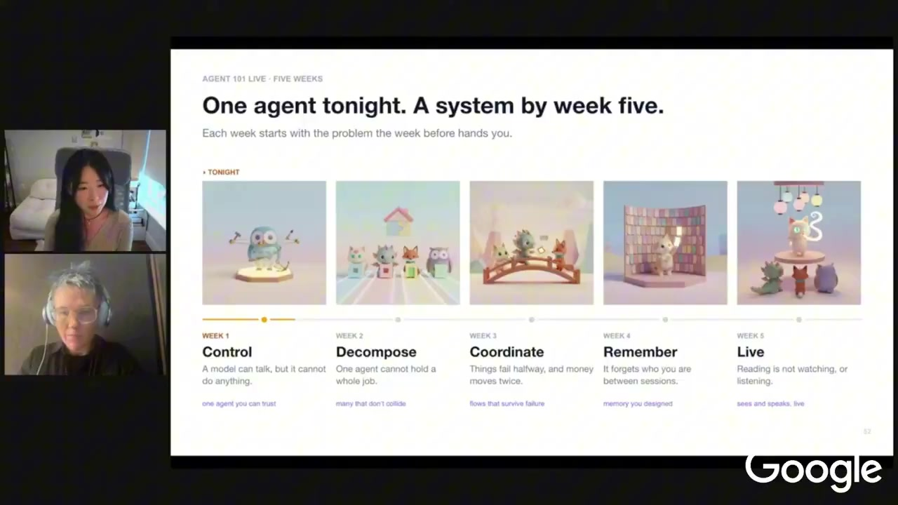
为什么单提示词不够：Race Day 与「fix is structure」
设定很简单：马拉松当天，跑者只问一句——这场该怎么跑？ Attempt #1：一个智能体、一条巨型提示词，承诺取天气、分析赛道、检查体能、输出策略。跑出来的回答自信、具体——但没有天气 API、没有赛道数据，数字全是编的。Annie 称之为 disease：当每一步都困在同一次模型调用里，就没法真正拉取、没法单测、没法信任。
修复方案不是更好的提示词。修复方案是结构。
So the fix is not a better prompt. The fix is structure.
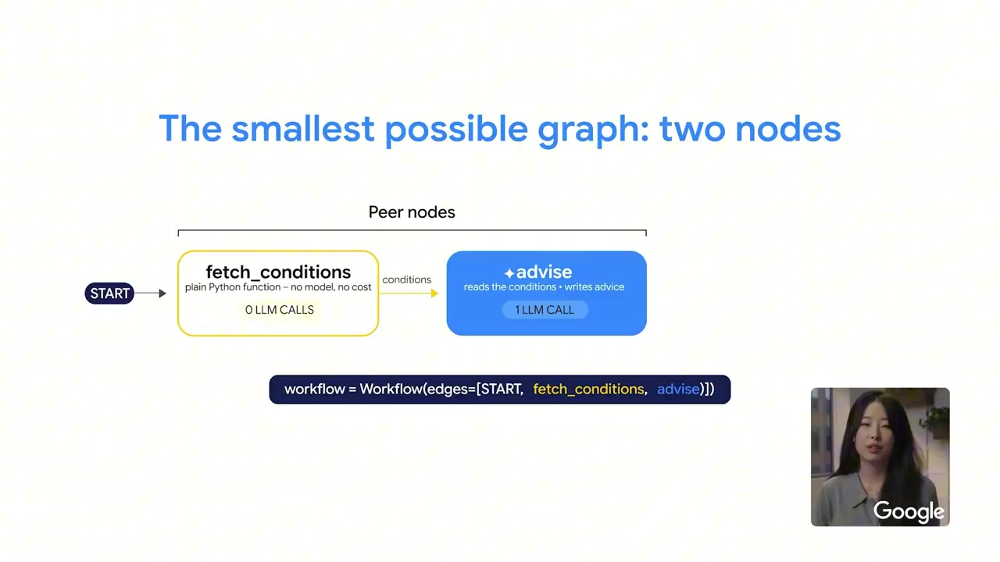
她把演进叠成一层层：先学 prompt engineering（对模型说什么）→ context engineering（模型周围放什么）→ loop engineering（计划—行动—检查循环）→ graph engineering：多块工作用边接起来。碎片是 node，接线是 edge。
直播段用「盖房 / 退款客服」把同一论点再讲一遍：单智能体 + 工具箱也能做事，但生产系统（尤其退款）若只靠提示词里的「先 A 后 B」，模型非确定性会跳步、改序。你既要生成式能力，又要确定性顺序——这就是引入 workflow / graph 的理由。
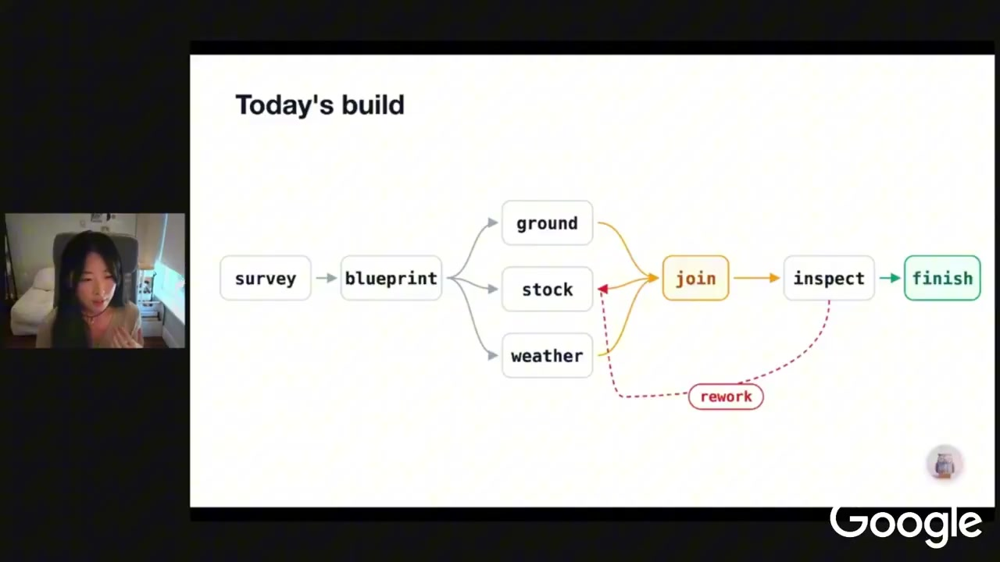
Graph engineering 是什么：节点、边、三种形
最小马拉松图：两个节点——fetch 是普通 Python 函数（取 race-day 条件，无模型、无费用）；advice 是智能体（读条件写建议）。同一列表、同一接线。原则：可预测工作进函数，推理进模型。
Fan-out
天气、赛道、体能互不依赖 → 从 start 画出三条边，并行拉取。ADK 2 还支持 dynamic fan-out：运行时才知道要并多少条。
Join
像 synthesizer：等最慢分支，把输出打成按节点名键控的字典。不必手写 merger / aggregator agent——图里的 join 节点即可。
Router
热天 / 冷天 / 普通天三种策略、三个专家智能体，要挑一个：
- LM router：让模型分类——能用，但费 token，且可能误读（非确定性）。
- Deterministic router：图里放带规则的路由节点。信号在数据里、集合是闭集时，if 语句更稳、更便宜。
短片成本账：三个并行工厂 + 一个 join + 一个 strategist → 仍然正好一次 LM 调用（只有 strategist 要模型）。
要不要上图？ 她给的自检：输入到来前能不能把流程画出来？能 → 画图、用 graph。形状本身依赖输入（如深度研究）→ ADK 2 的 dynamic workflow，让代码在运行时决定图的形状。有时你根本不需要图。
用 ADK 搭第一个图 / ADK Web 调试
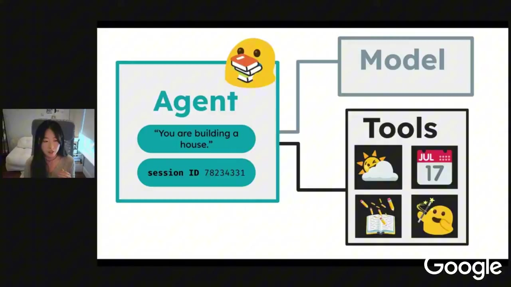
ADK 被定位为开源、可接多模型、本地可观测 / 测试、与 Google Cloud 部署协同的框架。本周 lab 在 Cloud Shell 上跑（也可本地 VS Code）：领免费 credit → 建 Agent Valley 前缀项目 → 配 .env / Vertex AI → 跑 setup。
节点可以是什么：函数、带工具的智能体、纯智能体，甚至整张子工作流（嵌套图）。先抽象业务阶段，再决定这一段用确定性逻辑还是生成式 / 智能体。
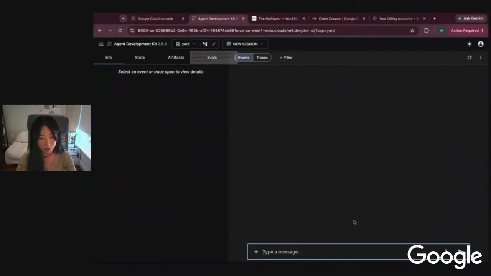
第一步：只挂一个 survey 节点（无工具的简单 agent），用 output state 键（如 site）写回共享状态。代码侧在 workflow 里放节点、用边连图；Cloud Shell Editor 打开 agent.py，根 agent 最初只有 survey。
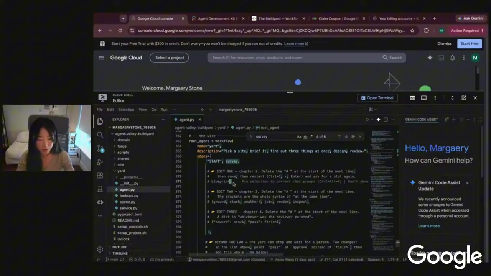
第二步：取消注释 blueprint，把 survey → blueprint 连成顺序边。图保证从左到右、不跳步、不倒序——这是相对「提示词里写顺序」的硬控制。代价是灵活性更低：真正开集、说不清顺序时，仍可交给模型决策。
同一套 agent 后端既驱动 ADK Web，也驱动 lab 的可视化 web app。改 workflow 后两边一起变。生产排障应优先用 ADK Web 看状态、产物、事件，而不是只在应用层点点点。
并行：fan-out / Join（以及「上百个」怎么想）
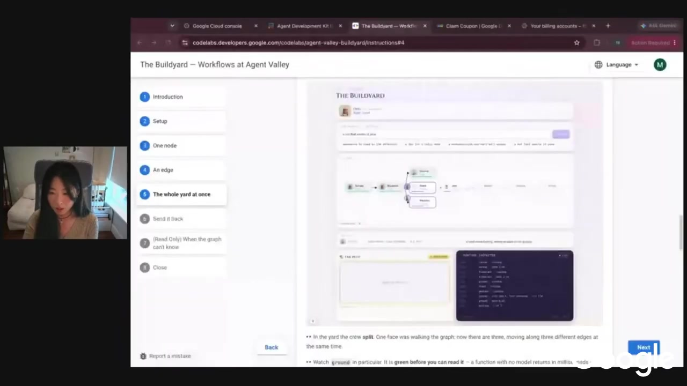
建房例子：算地基 / 库存 / 天气互不依赖 → fan-out 并行，再用 join 汇合，交给后续渲染 / 聚合。并行分支可以是函数、带工具的 agent、判断逻辑——类型可以混搭。Lab 里已知三条：ground（偏计算函数）、stock（agent+工具）、weather。
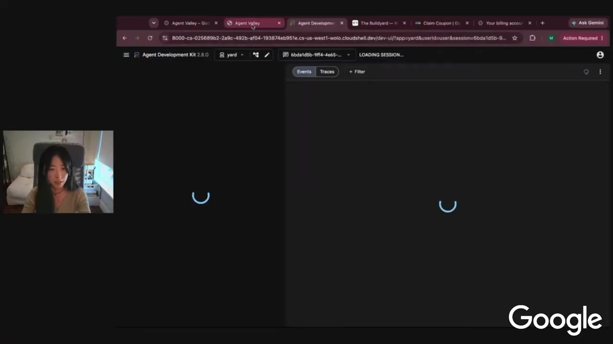
推文「hundreds in parallel」对应的是能力边界，不是本 lab 真的 spawn 上百个。Annie 额外介绍（lab 未深做）：
- Parallel worker：按输入个数复制同一种节点（厨房 / 卫浴 / loft 都是 design 节点）。
- Dynamic fan-out / fan-in：运行时才决定 fan 几条、各是什么；ADK 侧提到用上下文 /
ctx一类 API 在运行时挂节点。
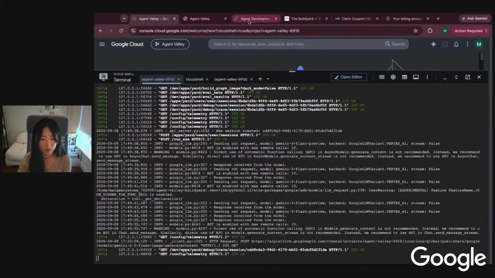
Loop engineering：route、check、repeat
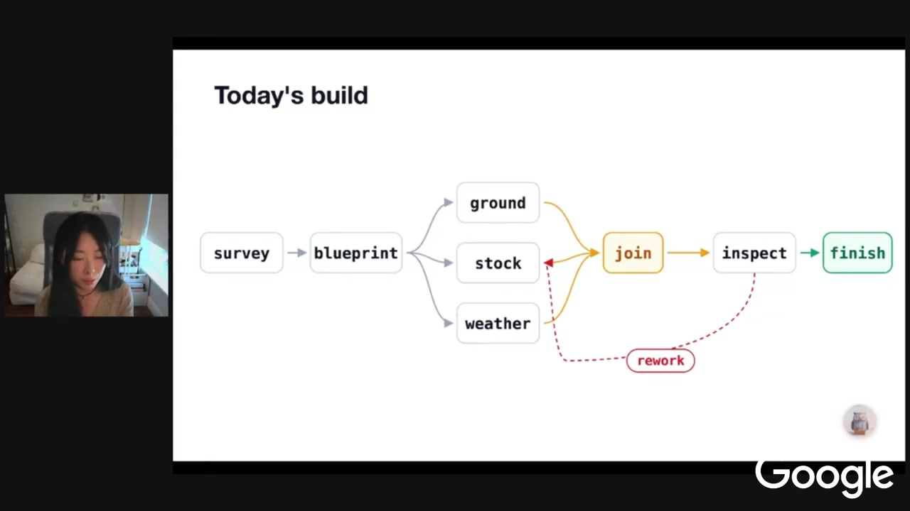
顺序 + fan-out/join 之后，下一步是 inspect → router：检查工作，决定 restock/rework 还是 finish，并防止环无限转。实现手法：路由边指回图里已有节点（向后指）→ 闭图 / 循环；若只指到新节点，那是改道而不是 loop。
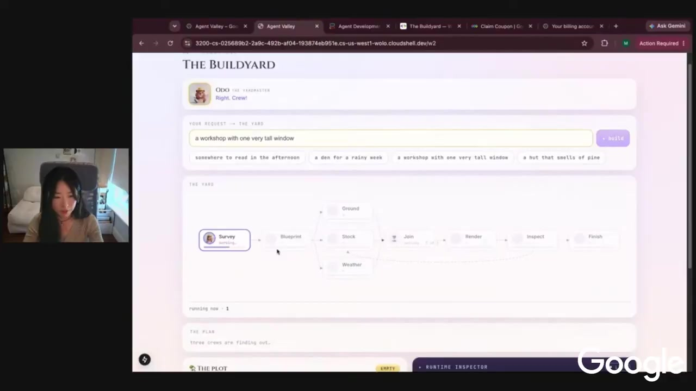
- 确定性路由：例如温度阈值（>30°C / ≤30°C）——闭集、信号在数据里。
- LM 路由：开集、难穷尽规则时再交给模型。
直播里还演示了 rate limit / resource exhausted：并行 + 模型节点容易撞配额，需重试。ADK Web 的图比应用层更能看清 join 与路由决策。
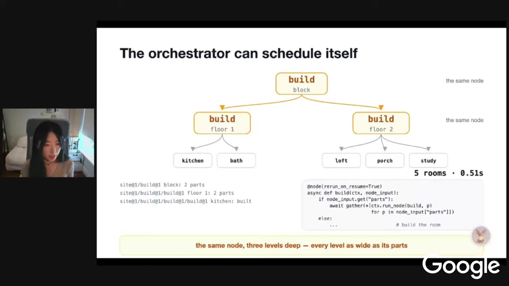
动态工作流（进阶、本 lab 只点到）：深度研究不知要考虑多少因素时，可在运行中生成子处理；也可用「单智能体委托子智能体」或「工作流 + LM router」。取舍始终是控制 vs 灵活性，由业务问题决定，而不是框架口号。
工具 vs 子智能体（Q&A）
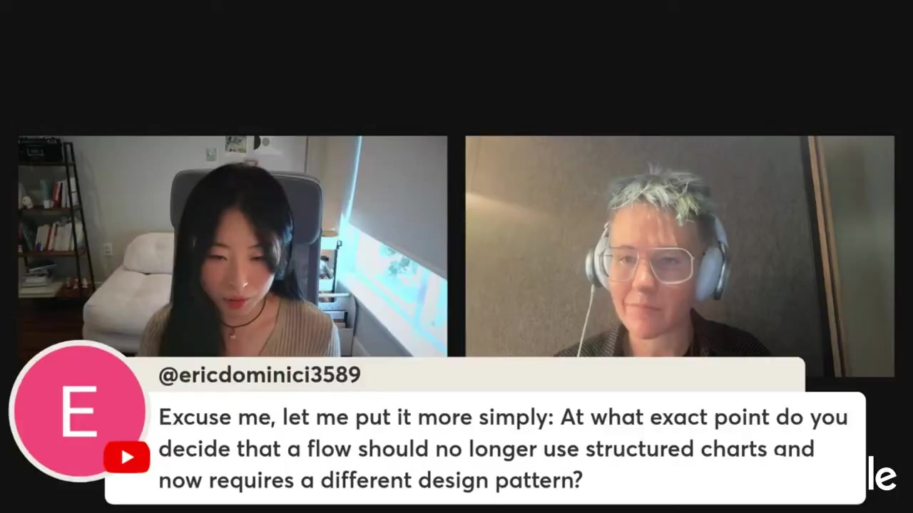
观众问：何时该多个专家智能体，而不是「一个智能体 + 很多工具」？Annie 的对比很干脆：
工具是无状态的；智能体是有状态的。
tool is stateless and agent is stateful
- 多工具：工具可并行，但结束后控制权回到那个主智能体——主脑一直握着方向盘。
- 子智能体：委托出去等于把控制权交给下一段；子智能体可以再委派、swarm、或交回。类似 workflow 里把控制交给下一节点。
决策问题：这段子流程要不要自己的「脑」和下一步决策权？要 → 子智能体 / 图节点；不要、只是干完就返回 → 无状态工具更合适。
其他 Q&A 要点：
- 何时不再用结构图？ 从小而可行的确定性流程起步；发现盖不住开集输入，再加 handler、加 AI、或引入动态工作流——按问题演进，而不是抽象选模式。
- 本地跑： clone → 自己的项目 / billing 或 API key → 改
.env（project id、Vertex、location）→ 装uv→ 跑 ADK / valley 脚本；核心仍是agent.py里的图。 - 怀疑某节点坏了： 在 ADK Web 点开每个节点看输入输出，先收窄根因；「自改进」可通过带检查的 loop 改状态 / 逻辑——但这不是片中独立成章的 1:30 专题。
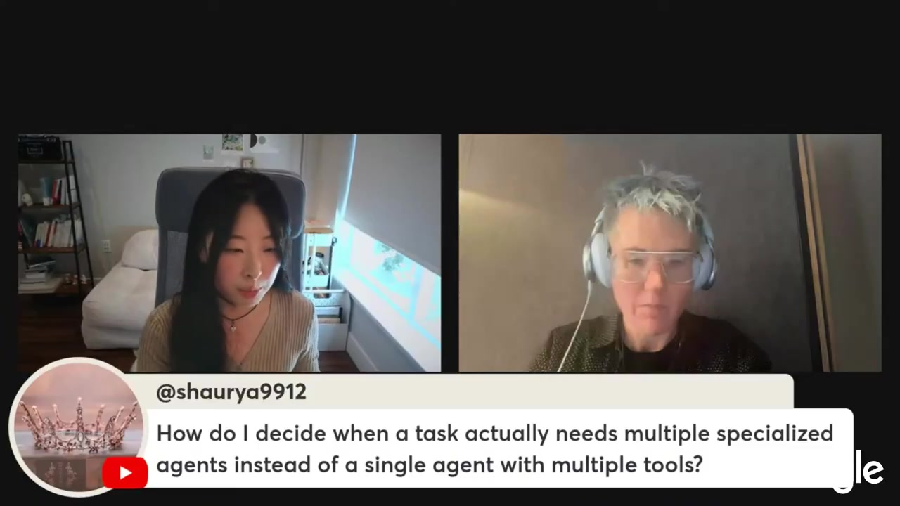
未展开：HITL / 状态管理（片尾预告）
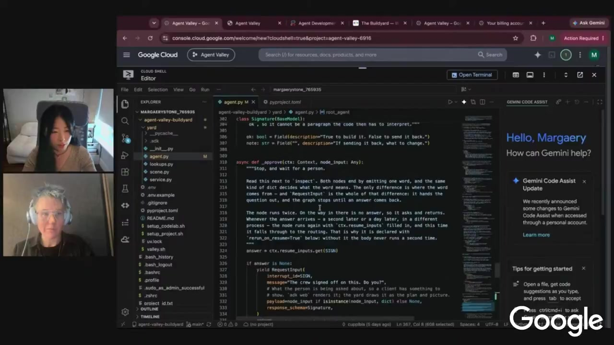
自动化不等于全自动：退款要人审、安全要人点头。下周主题是：长跑流程如何插入 human-in-the-loop、如何管理多智能体 / 工作流里的持久状态、如何暂停后次日再续跑。本笔记不展开实现细节——按片中边界，那是下一课。
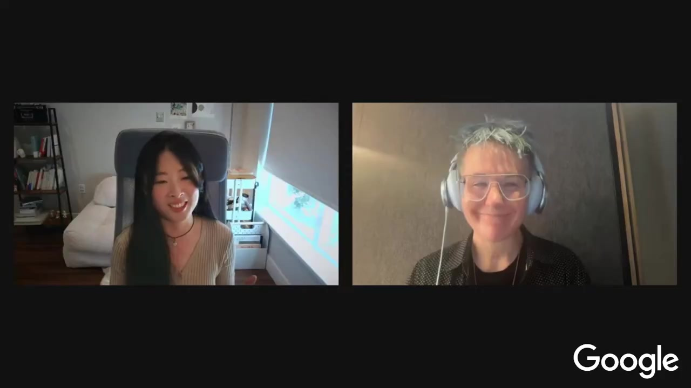